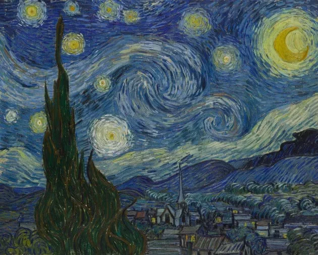

Café a noite
O terraço a que a tela se refere encontrava-se na Place du Fórum, em Arles, cidade para onde Van Gogh se mudou a fim de se dedicar à pintura. Segundo registros, o pintor resolveu recriar a paisagem do café após acabar de ler um romance de Guy Maupassant.
campo de trigo com corvos
Até pouco tempo se achava que esse era o quadro final do artista, entretanto pesquisadores do museu do pintor em Amsterdam descobriram um quadro posterior, Raízes de árvores, mas que jamais chegou a ser completado.